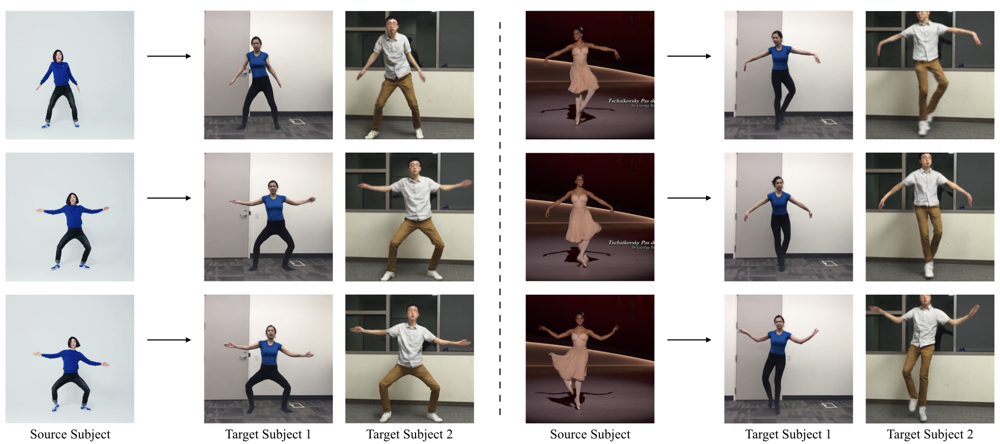

I ricercatori dell'università di Berkeley hanno sviluppato un software che sovrappone i movimenti di un ballerino professionista a quelli, meno armoniosi e leggiadri, di un'altra persona. Il pericolo però è trovarci protagonisti di video in cui compiamo gesti mai fatti "Every body dance now" è non a caso il nome dello studio presentato dai quattro scienziati informatici su arXiv, l'archivio dove vengono pubblicate le bozze degli articoli scientifici. Come la hit che nel 1990 fece ancheggiare il mondo al ritmo di musica dance, anche il software si propone di far danzare tutti. E ci riesce. Il segreto è sovrapporre i movimenti di un ballerino professionista a quelli di un'altra persona, poco aggraziata. Una metamorfosi possibile grazie a due reti neurali.

Il primo passo è avere due video, uno che ritrae il danzatore all'opera e l'altro in cui l'aspirante ballerino/a è intento a compiere movenze ordinarie. L'intelligenza artificiale si occupa di ridurre la magia dei corpi volteggianti in sequenze di immagini. In pratica, li converte in figure stilizzate i cui gesti vengono, infine, scambiati. Una tecnica che, spiegano gli studiosi, ha consentito di mettere a punto una serie di filmati in cui dilettanti si sfrenano al pari di pop star. Il software può essere considerato come una naturale evoluzione degli algoritmi in grado di replicare specifici timbri umani partendo da pochi secondi di clip audio. O di fondere i tratti somatici di chiunque con quelli del protagonista di un film, mettendo a disposizione le foto giuste. Tecnologie che stanno diventando sempre più raffinate e a portata di tutti. Con il risultato che un domani potremmo trovare online filmati credibili in cui diciamo parole mai pronunciate, compiendo gesti mai fatti. Il "deepfake" rimane sempre il più grave problema dell'ai.
Un team di ricercatori del Center for Interdisciplinary Music Research dell’Università di Jyväskylä in Finlandia ha scoperto, tramite analisi eseguite con la tecnica del motion capture, che le persone ballano in un modo unico, così distintivo che un’intelligenza artificiale può riconoscerlo e dunque collegarlo ad un’identità. Si è trattato di un risultato fortuito, come spiega Emily Carlson, prima autrice dello studio. Inizialmente i ricercatori volevano infatti studiare qualcosa di diverso, volevano cioè capire se si può utilizzare la tecnica dell’apprendimento automatico , noto algoritmo dell’intelligenza artificiale, per identificare che tipo di musica un soggetto che balla sta ascoltando. In base ai movimenti, secondo i ricercatori, forse poteva essere possibile capire il genere musicale per il quale il soggetto sta seguendo il ritmo.
Gli esperimenti sono stati condotti su 73 partecipanti tramite la tecnica della motion capture. Ai partecipanti venivano fatti ascoltare vari pezzi musicali di diversi generi. I partecipanti stessi dovevano muoversi e ballare, cercando di seguire il ritmo, nella maniera più naturale possibile. Analizzando i movimenti dei partecipanti tramite la tecnica dell’apprendimento automatico, l’algoritmo riusciva ad identificare il genere musicale corretto solo nel 30% dei casi. Tuttavia gli stessi ricercatori scoprivano qualcosa che forse è ancora più importante: il computer riusciva ad identificare quale dei 73 soggetti stava ballando nel 94% delle volte. “Sembra che i movimenti di danza di una persona siano una specie di impronta digitale”, dichiara Pasi Saari, uno degli autori dello studio. “Ogni persona ha una firma di movimento unica che rimane invariata, indipendentemente dal tipo di musica che sta suonando.” Per alcuni generi, tuttavia, il computer si dimostrava più preciso rispetto ad altri. È ancora presto per dire se un software di riconoscimento del ballo possa essere utilizzato come si utilizza un oramai “banale” software di riconoscimento facciale ma gli stessi ricercatori dichiarano già a questo punto di essere poco interessati ad eventuali applicazioni nel contesto della sorveglianza o del banale riconoscimento.